例题 1
例 1 已知双曲线的焦距是 6 , 双曲线上的点到两个焦点距离之差的绝对值等于 4 . 写出双曲线的标准方程和焦点的坐标.
教师整合版 / 沪教版高中数学
选择性必修第一册
第2章圆锥曲线 · 保留教材主线与原题
教材与正式教参整合
如图 2-3-1,给定两个定点 与 ,将一条拉链先拉开一部分,并将拉开的一支的一端固定在 处,在另一支上选择一点固定在 处,在拉链头 处放上一支铅笔,然后逐渐拉开拉链,让铅笔尖 顺势移动,则笔尖 画出的图形 (图 2-3-2 中实线所示的曲线在直线 上方的部分) 就是使 为常数 的点 的轨迹的一部分.
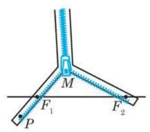
图 2-3-1
我们知道平面上到两个定点的距离之和等于常数 (此常数大于两定点之间的距离) 的点的轨迹是椭圆, 那么平面上到两个定点的距离之差等于常数的点的轨迹是怎样的曲线呢?
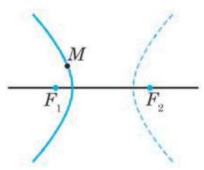
图 2-3-2
如果把拉链想象成无限长,那么得到的点 的轨迹就向上方无限伸展了; 如果把拉链翻转 ,又可以画出图 2-3-2 中实线所示的曲线在直线 下方的部分. 交换 与 的长度, 图中用虚线表示的曲线也可用类似方法画出.
?
为什么要加条件: “绝对值”? 为什么要加条件: ?
下面根据双曲线的定义, 参照求椭圆的方程的方法推导双曲线的方程.
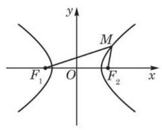
图 2-3-3
取线段 的中点为原点, 的方向为 轴的正方向, 建立平面直角坐标系, 如图 2-3-3 所示. 设两个焦点之间的距离 ,则点 的坐标分别是 .
设 是双曲线上的任意一点,由定义,有
因为 ,
所以
即
将上式两边平方, 并整理后可得
再将上式两边平方, 并整理后可得
因为 ,所以 . 从而可令 , 并将上式改写为
①
因此,双曲线上任意一点 的坐标 都是方程①的解. 反过来, 可以证明以方程①的解为坐标的点都在这个双曲线上(只需将上述推理过程反过来推演即可).
方程①所表示的双曲线的焦点在 轴上,且坐标分别为 ,而 . 如图 2-3-3,双曲线由两支分开的曲线组成.
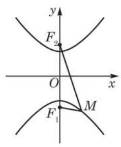
图 2-3-4
如果以连接两个焦点 和 的直线为 轴,线段 的垂直平分线为 轴,如图 2-3-4 所示,那么两个焦点可分别设为 ,此时只要将方程①的 互换,就可得双曲线的方程是
②
其中, 的关系仍是 .
例 1 已知双曲线的焦距是 6 , 双曲线上的点到两个焦点距离之差的绝对值等于 4 . 写出双曲线的标准方程和焦点的坐标.
例 2 已知点 到点 的距离减去它到点 的距离之差是 ,分别求下列条件下点 的轨迹方程:
?
(1) ； (2) .
解(1)依题意，
而 ,所以点 的轨迹是以 为焦点的双曲线的右支,且 .
因为 ,所以点 的轨迹方程为 .
(2)当 时, ,此时点 的轨迹是以 为端点在 轴上向正方向的射线,轨迹方程为 .
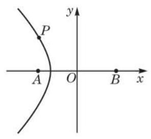
图 2-3-5
例 3 在相距 2000 m 的两个观察站 、 先后听到远处传来的爆炸声,已知 站听到的时间比 站早 ,声速是 . 建立适当的平面直角坐标系,判断爆炸点可能分布在什么样的轨迹上, 并求该轨迹的方程.
解 设爆炸点为 ,由题意知
Q
又
所以点 分布在以 为焦点的双曲线且靠近 处的一支上.
双曲线具有很好的定位功能. 航海中使用的就是一种双曲线定位系统. 这一系统是由设置在岸上的两个发射台以及船上的接收机(定位仪)等组成, 通过测定两个发射台发射的电磁波传播到船上的时差来确定船舶的位置.
如图 2-3-5,以 的中点为原点,以 的方向为 轴正方向,且以 为单位,建立平面直角坐标系.
由 ,得
所以,点 所在的轨迹的方程为 .
(1) ；
(2) ；
(3) .
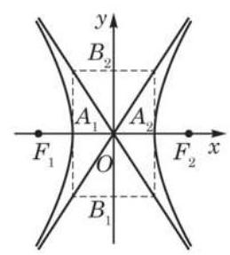
图 2-3-6
在方程①中,令 ,得 ,所以 、 是双曲线的两个顶点. 当 时, 没有实数解,所以双曲线与 轴没有交点,但我们也把点 画在 轴上,如图 2-3-6 所示.
由方程①可知 ,所以 ,也即 , 且随着 不断增大, 也相应地不断增大. 因此,双曲线 在不等式 和 所表示的区域内 (图 2-3-7), 且由两支组成: 一支双曲线在直线 的左侧,向左上、左下两方无限延伸; 另一支双曲线在直线 的右侧,向右上、 右下两方无限延伸.
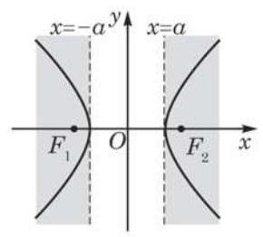
图 2-3-7
双曲线 在第一象限内部分的方程是
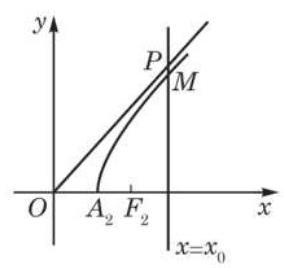
图 2-3-8
如图 2-3-8,设直线 与双曲线和射线 分别交于点 ,可得
即在第一象限内,双曲线总在射线 的下方,且
因此,当 逐渐增大时, 的值趋近于零.
这样,双曲线的右支向右上方无限延伸时,它总在直线 的下方,与直线 无限趋近,但永不相交.
根据对称性,双曲线 和两条直线 在其他象限也有类似性质. Q
这是双曲线与其他圆锥曲线不同的特有性质.
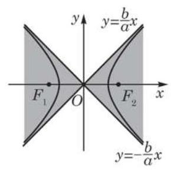
图 2-3-9
近线(asymptote)，可以证明，双曲线位于以两条渐近线为边界的左、右平面区域内(图 2-3-9).
因为 ,所以双曲线的离心率 .
由等式 ,可得
因此,离心率 越大, 也越大,即渐近线 的斜率的绝对值越大, 这时双曲线的形状就从扁狭逐渐变得开阔. 这说明, 双曲线的离心率越大, 它的开口就越开阔; 反之, 离心率越小,双曲线的开口就越狭窄.
例 4 求双曲线 的顶点坐标、焦点坐标、离心率与渐近线方程.
解 把给定的双曲线的方程化成标准方程
因此实半轴的长 ,虚半轴的长 . 于是
从而双曲线的两个顶点的坐标分别是 ,两个焦点的坐标分别是 ,离心率为 ,两条渐近线的方程是 和 .
(1) ； (2) .
1.(1)实半轴长 4,虚半轴长 3,离心率为 ,焦点坐标为 、 ,顶点坐标为 ,渐近线方程为 和 .
(2)实半轴长 2,虚半轴长 ,离心率为 ,焦点坐标为 、 , 顶点坐标为 ,渐近线方程为 和 .
A. ; B. ; C. ; D. .
例 5 已知双曲线过点 ,它的一条渐近线的方程为 . 求双曲线的标准方程.
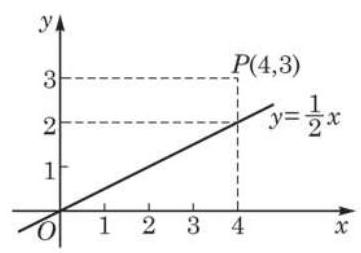
图 2-3-10
解 因为双曲线的一条渐近线方程为 ,当 时, 渐近线上对应点的纵坐标为 ,小于点 的纵坐标 3 (图 2-3-10),所以双曲线的焦点在 轴上. 设双曲线的标准方程为
由 ,可知 . 若令 ,则 .
?
又因为点 在双曲线上,所以
如果双曲线的渐近线方程是 ,即 ,那么双曲线的方程应具有什么形式?
解得 .
因此，所求双曲线的标准方程为 .
例 6 设直线与双曲线的方程分别为 和 1,当实数 取何值时,直线与双曲线分别有两个公共点? 有一个公共点? 没有公共点?
解 将直线方程 代入双曲线方程 ,得
①
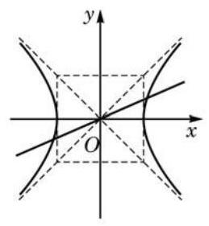
图 2-3-11
当 ,即 时,方程①有两个不同的实根 ,从而直线与双曲线有两个不同的公共点; 当 ,即 时,方程①无实根,从而直线与双曲线没有公共点; 直线与双曲线只有一个公共点的情况不存在.
例 6 的结果从图像上(图 2-3-11)看也是显然的，因为此双曲线夹在两条渐近线 之间的左右平面区域内,所以只有当直线也经过这个区域时, 它与双曲线才有公共点.
例 7 双曲线型自然冷却通风塔的外形是由双曲线的一部分绕其虚轴所在的直线旋转一周所形成的曲面, 如图 2-3-12 所示. 已知它的最小半径为 ,上口半径为 ,下口半径为 ,高为 . 建立适当的平面直角坐标系,求此双曲线的方程. (结果精确到 )
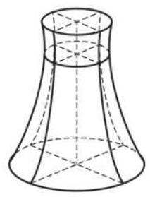
图 2-3-12
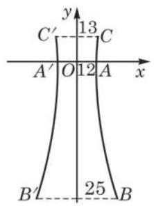
图 2-3-13
解 图 2-3-13 是通风塔过中轴的剖面. 以剖面最窄处的水平线为 轴,则 轴与双曲线的交点 与 是双曲线的顶点; 又以通风塔的中轴为 轴. 在这样的平面直角坐标系中,设双曲线的标准方程是
点 的坐标可分别设为 ,其中 , . 又因为塔高为 ,所以 .
由 是双曲线的实轴,得 .
因为点 在双曲线上,所以
解得
代入 ,得
解得 .
因此，所求双曲线的方程为
(1)顶点在 轴上，两顶点间的距离是 10，且经过点 ；
(2)一个焦点的坐标为 ，一条渐近线方程为 .